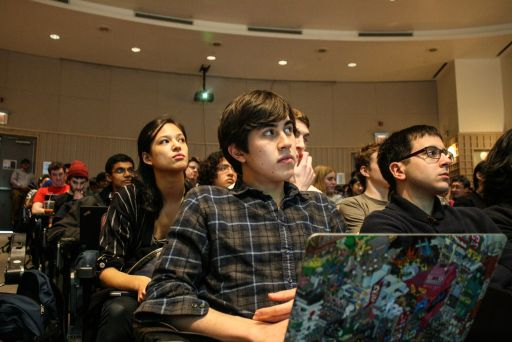
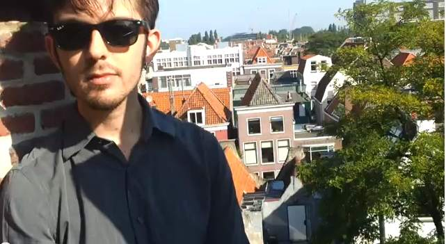
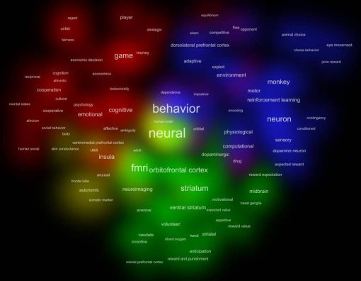
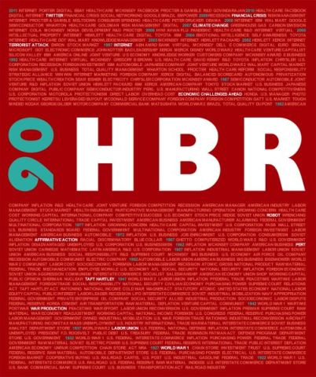
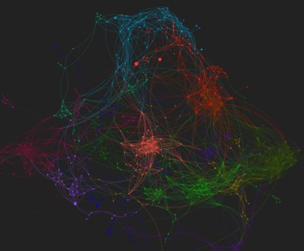
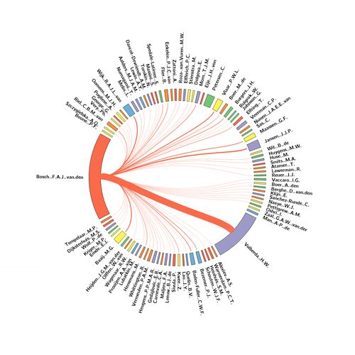

Portfolio
network analysis. social media. natural language processing. data visualization. web apps.
|
|
Digital Night at emlyon business school (2017) A new edition is planned for 2018! |
|
|
Twitter Mix Days (2015 in Lyon, 2016 in Galway) The first edition was in Lyon and the second in Galway |
 |
Les calanques sont elles ouvertes? check the code |
| Neuromarketing: a timeline visit the timeline - read the paper (in submission)
Neuromarketing is an emerging field connecting marketing and neuroscience. At the frontier between an academic research field and new business practices in market research. With Profs. Paul Wouters and Ale Smidts, we investigated the history of neuromarketing for the years 2002 - 2008. To write this history, we used a collection of documents mentioning "neuromarketing", in online and offline media, harvested by (at the time) research assistant Nicoline Beun.
This timeline illustrates key episodes in this history. |
|
|  | Real Time Opinion check the code |
 |
Umigon: sentiment analysis on Twitter read the paper - check the code visit the website of Umigon Umigon is now available as a desktop application for Mac, PC and Linux. Contact me at clevallois[at]rsm.nl for information about licenses. |
|  | Philosophy, visualized: a conversation with Blake Thompson watch the videos |
|  | Cowo: create semantic maps from your texts visit the wiki - check the code download cowo |
|  | The 90 year anniversary of the Harvard Business Review - a data visualization for Kaggle with Valerie Alloix check the submission on Kaggle download the full-sized poster |
|  | A map of the #dataviz community on Twitter in 2012 visit the interactive map |
|  | The circle of co-authors of Pr. Frans van den Bosch Visit the project
This is an evening project created in 2012 at the occasion of a symposium honoring Pr. Frans van den Bosch, a professor at Rotterdam School of Management.
It shows all the co-authors of the professor, with the thickness of links corresponding to the number of co-authored publications.
|
{kind=link}